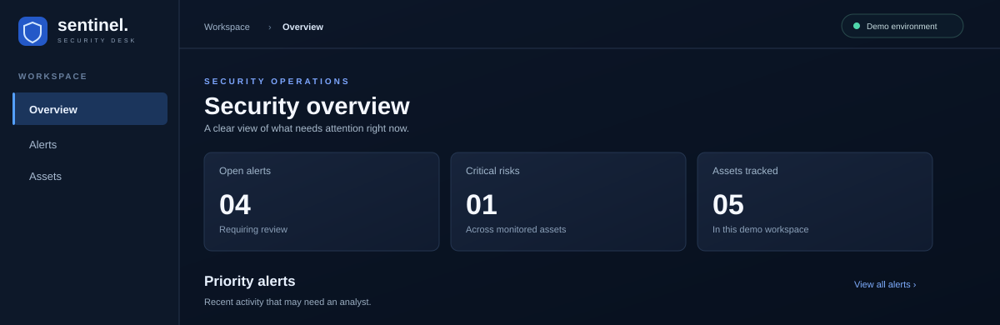

Self-service kiosk
Designed and implemented frontend screens and navigation for a healthcare self-service experience, integrating them with application services. The professional case is anonymized.
SOFTWARE ENGINEER · BARCELONA
Full-stack engineer with three years of professional experience across interfaces, APIs, and data. Now building practical AI applications that put reliable software around models.
01 / SELECTED WORK
Professional delivery and personal builds that show how I approach useful software.
React and Angular components, REST services, SQL-backed features, integration and production support.
Designed and implemented frontend screens and navigation for a healthcare self-service experience, integrating them with application services. The professional case is anonymized.
Multimodal LLMs analyze video and generate validated, structured ranking plans. A scoped tool-calling agent inspects jobs; a trained PyTorch boundary classifier is evaluated in an experimental hybrid workflow. A documentation RAG assistant is in development.

INTERFACE PREVIEW · FICTIONAL DATAA fictional security operations interface for scanning alerts and assets quickly. Search, filters, details, and local acknowledgement give the static demo real interactions.
A library backend built with SAP CAP and Node.js. CDS models define the domain and OData services expose CRUD operations, validations, actions and authorization. Deployed and tested with SAP HANA Cloud on SAP BTP; the application is still being developed.
02 / PROJECT WALKTHROUGH
Explore the shape of the workflow without seeing a private channel, real footage, or production data.
SylClips turns long videos into reviewable clips and short-form plans through multimodal LLM analysis, structured outputs and human feedback. Gemini is the default decision path; a trained PyTorch classifier and hybrid routing are experimental. A scoped LLM agent can inspect jobs, while a RAG assistant for project documentation is in development. TypeScript and FastAPI support the workflow. This public interface uses invented data.
Inspect fictional evidence, review cuts and see how your choice changes a structured plan.
Gemini analyzes video and proposes clip decisions and rankings. Claude provides a fallback path. Schemas and project rules validate outputs before rendering.
A trained boundary classifier scores frame pairs. The experimental hybrid handles confident cases locally and routes uncertain ones to Gemini or human review.
An LLM agent uses bounded read and preview tools to inspect pipeline jobs. FastAPI provides progress, logs, cancellation and feedback.
A source-grounded assistant for pipeline documentation is being developed. It is separate from the current video decision path.
03 / EXPERIENCE
I began by solving users' problems directly, then moved into building the products behind those workflows. My AI work continues that progression through personal engineering projects.
Building SylClips with multimodal LLMs, validated structured outputs and a scoped tool-calling agent. Training and evaluating an experimental PyTorch classifier; developing a separate documentation RAG assistant.
Delivered features from requirements and design through frontend, REST APIs, integration, testing and production support. Built reusable React and Angular components and worked with Django, Spring Boot, Node.js and SQL. Selected work: a healthcare self-service kiosk, CORONIS integrations and a company landing page.
First point of contact for end users. Diagnosed software and network issues remotely with AnyDesk; tracked and escalated incidents by priority and SLA in Jira Service Management. Managed user provisioning, permissions and access control, and documented solutions in the team knowledge base.
Technical Diploma in Computer Science · Computer Engineering studies at the University of Buenos Aires
Spanish native · English C1 (Cambridge CAE)
04 / TOOLKIT
A full-stack foundation, with newer AI work developed in personal projects.
React · Angular · TypeScript · JavaScript · RxJS · Redux · HTML5 · CSS3 · Sass · Responsive design
Python · Django · Django REST Framework · FastAPI · Node.js · Java / Spring Boot · REST APIs · SQL · PostgreSQL · MySQL · MongoDB
Multimodal LLM APIs · Structured outputs · Tool calling · Human review · Prompt engineering · Experimental PyTorch model training and evaluation
Postman · API testing · Functional validation · Troubleshooting · Git · GitHub · GitLab · Docker · CI/CD · Jira · Azure DevOps
Also: SAP CAP · CDS · OData · SAP BTP · SAP HANA Cloud
05 / CONNECT
Open to software engineering roles across full-stack development and applied AI.
Connect on LinkedIn ↗